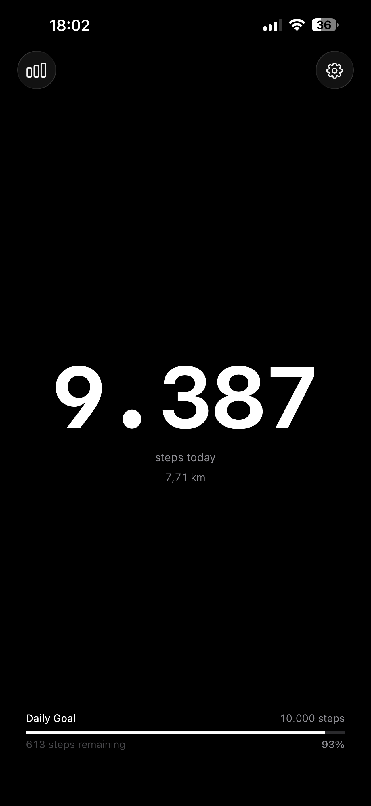

Step counting, stripped back. No subscriptions. No clutter. Just your steps, your goal, and a gentle nudge when you need it.

JustSteps runs silently in the background, tracking every step whether your phone is in your pocket or on your desk.
Get a notification the exact moment you cross your daily goal — even if the app is closed. No polling, no delays.
Browse your full history month by month with a 7-day bar chart. Powered by HealthKit so your full step record is always there.
Set any daily target you want. Whether it's 5,000 or 20,000 steps, the app adapts to your pace — not a generic recommendation.
Set one or several reminders for times when you tend to sit too long. They only fire if you haven't hit your goal yet.
Home Screen and Lock Screen widgets keep your count visible at a glance — no unlocking required. Updated automatically.
Live step count with distance, a progress bar toward your goal, and full step history — all in a single, distraction-free view.
A circular gauge, a step count, or a full progress bar — all available as Lock Screen widgets so your goal is always visible.
A small widget with your current count, daily goal progress, and percentage — all updated automatically throughout the day.
All data stays on your device and in your personal iCloud via HealthKit.
No servers. No analytics. No tracking.
Free to download. No account. No nonsense.